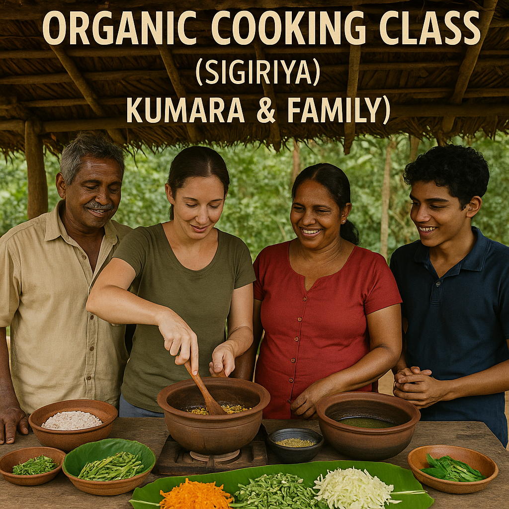

Image credit: [Everything Lanka]
If you're craving an authentic taste of Sri Lankan cuisine and culture, head over to Kumara & Family's Organic Cooking Class near Sigiriya. It’s more than a cooking lesson — it’s an intimate countryside experience filled with stories, spices, and warm hospitality.
What You'll Experience
- Harvest organic vegetables and herbs from their lush family garden.
- Learn traditional cooking techniques passed down through generations.
- Prepare signature Sri Lankan dishes like **jackfruit curry**, **pol sambol**, and **coconut roti**.
- Enjoy a generous home-cooked meal with Kumara’s family, surrounded by rice fields and village tranquility.
How to Get There
- Located just **5 km from Sigiriya Rock Fortress**.
- Accessible by **tuk-tuk or private vehicle** — most nearby guesthouses can arrange transport.
- Look for signage along the **Sigiriya-Dambulla road** or use the exact location via **Google Maps**.
Best Time to Visit
The classes are held daily, typically in the **late morning (around 10:00 AM)** and **afternoon (around 4:00 PM)**. The **dry season from January to April** offers the most pleasant weather for both the farm tour and cooking session.
Why It's Special
- Kumara’s family grows everything organically — no chemicals, just natural goodness.
- Get hands-on experience with Sri Lankan clay pots, coconut graters, and spice blending.
- Learn to balance flavors the authentic way: spicy, sour, sweet, and savory.
- Guests often leave with recipes and heartfelt memories of this humble village family.
If you're visiting Sigiriya and want to discover the **soul of Sri Lankan cuisine** in the most authentic setting, this organic cooking class is an unforgettable treat!